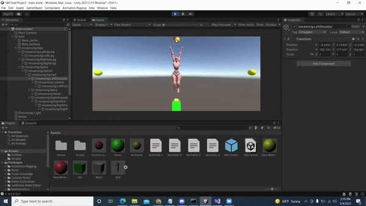
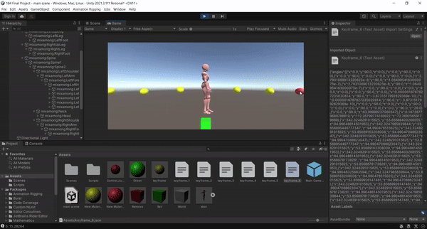
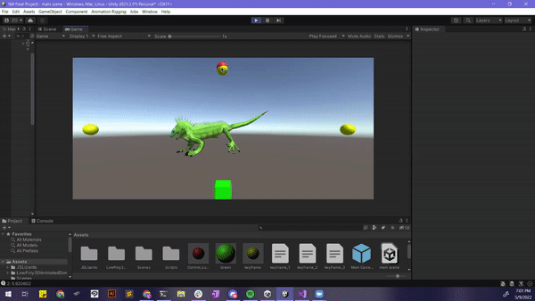
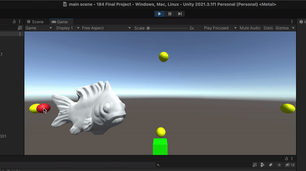

Final Project Proposal - Animation using Spatial Keyframing
Andrew Chen, Noah Schwartz, Varun Saran, Ze-Ning Ong
Abstract
Our project is based on a previous spatial keyframing project that can be found here:
https://www-ui.is.s.u-tokyo.ac.jp/~takeo/research/squirrel/index.html.
Although our program has the same functionality, our structure and interpolation methods are different and we did not use any starter code. We designed our program in Unity, starting with a scene entirely from scratch, and imported character models from Mixamo and the Unity Asset Store. There are three main parts we coded for our project: keyframes, cursor control, and interpolation.
Models: Our first step in this project was figuring out how to get models that had joints into Unity, and how to use Unity overall. We first found some models on Mixamo, and imported a robot there. We also manually created a model with simple 3D gameobjects in Unity, and made a basic cubeman. However, manually rigging models was quite time consuming and did not look as nice as the imported ones. To rig the imported 3D models, we used the Unity Animation Rigging package, which allowed us to easily rig most models. We also set up a Github repo. Since it was our first time using Unity, we had a lot of issues with manipulating the models and Git conflicts when we started out. We were able to solve these problems with online resources.
Keyframes: Keyframes in our program are saved as a json file that contains a list of joint angles of the character model and the (x, y) position that the keyframe sphere (the red control cursor) was placed in. After moving parts of the model to the desired angles and directions, the user can save the keyframe which will show as a yellow sphere on the screen.
Cursor control: When using the program, the cursor location will be denoted by a red sphere that follows the cursor. Moving the cursor to the saved keyframe locations on the screen will cause the model to move towards the saved keypoint position.
Interpolation: The program smoothly transitions between multiple keyframes, and the model’s joints are interpolated from all the saved keyframes, in real-time. The original spatial keyframing paper used transformation matrices and radial basis functions to control their models, but we decided it was too complicated for the time we had, so we decided on an original linear interpolation method using inverse-distances as weights. The interpolated model position is a linear combination of weighted joint angles of each of the keyframes. We calculated the weights for each keyframe based on the cursor’s distance from the saved keyframe location compared to the total distance from all the keyframes. Other interpolation methods such as barycentric coordinates or bilinear interpolation would not have worked well for our application because they are limited to a certain number of points (3 or 4), and interpolation across more points was incredibly complicated. Our method was relatively simple to implement and fix and provided the results we wanted in the end.
Example runthrough of our program from the technical perspective:
The user aligns the character rig in the direction and angles they desire, via the standard Unity Editor mode.
The user hits play, and then moves their cursor (which has a red sphere attached) to the desired (x,y) location they want their keyframe to be represented by. They then left click to place the red sphere there, and move their cursor to the green square at the bottom of the screen and left click again, which saves the keyframe that was just placed.
Clicking the green square triggers a script we made, which takes in the main model and recursively saves the EulerAngles of each of its children objects. This list of angles are stored in a Keyframe class, along with the (x, y) coordinates of the keyframe sphere, and saves this class to a json file within our Unity project.
The user then hits end to terminate the program, and as the user hits play again, our script, on start, reads all keyframe json files that were saved and loads the keyframe’s angle list and location into a new struct of keyframes. The user can then repeat steps 1-3 to make more keyframes (Step 5 Interpolation only works with two or more saved keyframes).
While playing the scene, the user can hit the space-bar to enter interpolation mode. The interpolation algorithm was described in the section above. After the interpolation algorithm returns the list of new angles to set, we then use pointers to recursively run through the model’s children objects and set each one's EulerAngles to the angle in the list. Because the model is traversed through its children in exactly the same order it was saved, we don’t need to use dictionaries to assign each joint its respective angle; we merely need to set the joint’s angles to the next index in our angle list array.
Problems we faced
One problem we had with our interpolation method was that the model would not fully take on the position of a keyframe when the user moved the cursor directly on top of a saved keyframe location. This was because the distances from the cursor to the other keyframes were still considered when interpolating, skewing the weights. We solved this by scaling the inverse distance of the cursor to the keyframes by taking it to a high power of 10 (which could be more or less, but 10 worked well for us). This way, being close to a keyframe becomes much more heavily weighted while still keeping smooth interpolation in between.
We also had another problem when working with euler angles. For the human character, we wanted to move the arms from 45° to -45°. However, Unity stores -45° as 315°. When interpolating, this means it interpolated from 45 all the way up to 315, instead of down to -45. This resulted in a very unnatural look, as the arms would swing behind the body instead of in front. We fixed this by subtracting 360 from any angle higher than 180, to force 315 to become -45, and hence give us a 45 to -45 degree range of motion, which looks natural. However, this is a model-specific fix because there may be times we want to go higher than 180° for a joint. Due to the nature of euler angles, there is no way to robustly get around this.
Lastly, we had a last problem regarding our user interface. We wanted to implement the features of moving the cursor and clicking buttons into our program, but those features required a 2D space, yet our game was set in a 3D world environment. So our mouse would never fully align with the objects in the scene, since the depth distorted the (x,y) location of the cursor. To resolve this issue, we had to use Camera-To-Screen and Screen-To-World transformations to get the cursor to follow exactly the mouse’s (x,y) position, and Ray Casting to cast rays from our camera onto our button to check that our mouse is hitting it when left clicking.
In general, we learned that when working with graphics, what makes sense in code might not translate to a good looking product, and vice versa. For example, our program originally correctly transitioned from one angle to the other, but because of the nature of the model, some parts look unnatural when rotating certain ways. On the other hand, scaling the weights by a power will technically never exactly match the keyframe mathematically, but the difference is not noticeable at all and we end up with a desirable, natural outcome.
Results

Testing our basic UI with a human. There are 4 keyframes (the yellow spheres), controlling the direction the body is facing, and the arms. Moving the red cursor around the screen, we
can animate the human as our program interpolates between the 4 saved keyframes.

Now, we have a few more keyframes, this time controlling the legs. As we move the cursor, it looks like the character is walking.

We can also animate non-human models. With only 3 keyframes set, we can create this animation of an iguana looking around for food, and starting to pounce.

In all the previous examples, we only interpolated over joint angles. Now, we also add position. The left and right keyframes control the fish's position, and the top and
bottom keyframes control the joint angles. A 2D sinusoidal movement of the red control cursor makes it look like the fish is actually swimming. We really like this result because it highlights
the advantages of spatial keyframing. It was really simple to setup — its only 4 keyframes, it didn’t require synchronizing the angles with the translation when setting up keyframes, and took
advantage of the 2D cursor control (by separately interpolating angles and positions). With conventional temporal key framing, none of this is possible.
Ze-Ning:
Ze worked on importing models. She also worked on looking for interpolation methods, and coding the first attempt of our linear interpolation method. Ze contributed to the deliverables for the proposal, milestone, presentation, and final report.
Noah: Noah worked on the user interface, such as the keyframes, the cursor, and the save keyframe button, as well as their respective scripts. In addition, Noah implemented the code to save and load keyframe data into json files. Noah contributed to the deliverables for proposal, milestone, presentation, and final report.
Varun: Varun worked on defining keyframe structs, Unity setup, and defining the general workflow for interpolating joint angles and using the keyframe structs. Also helped with debugging the interpolation algorithm, and fixing the issues described in the “problems” section of this writeup. Also added translation to the interpolation, in addition to just joint angles. And worked on all the project deliverables.
Andrew: Andrew worked on the interpolation method and debugging, as well as all the project deliverables.